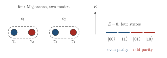
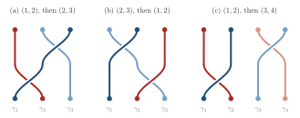

Page 15 of 16 of this session
5.19 Topological quantum computing with Majoranas
Why would we want Majoranas for a quantum computer? We will now see that four Majoranas make two ordinary fermion modes, so that the states of one fermion parity form a qubit. We also see that two exchanges of Majoranas that share one Majorana do not commute, and this is what a quantum gate needs.
\[c = \frac{1}{2}\left(\gamma_A + i\gamma_B\right), \qquad c^\dagger = \frac{1}{2}\left(\gamma_A - i\gamma_B\right). \tag{5.18}\]
This is the inverse of (5.17) of Section 5.15. An ordinary fermion \(c\) is written with two Majorana operators \(\gamma_A\) and \(\gamma_B\), which are Hermitian, square to one and anticommute with each other.
Majorana modes get so much attention, beyond their own unusual properties, because of their proposed use in fault-tolerant quantum computing. Majoranas are non-Abelian anyons. Exchanging, or braiding, one Majorana around another does not only multiply the many-body ground state by a phase. It acts as a unitary matrix on a degenerate ground-state manifold, so the order in which different braiding operations are done matters. This means that the algebra does not commute, and this is what is called non-Abelian. This follows directly from the structure of the BdG Hamiltonian when more than two Majoranas are present.
For concreteness, four Majorana operators \(\gamma_1,\gamma_2,\gamma_3,\gamma_4\) can be combined again, with pairings of the type of (5.18), into two ordinary fermionic operators, which we can call artificial fermions. So a system with four Majoranas encodes two ordinary fermionic modes. The resulting many-body ground-state manifold, with the states empty, one mode filled, the other mode filled and both filled, is four-fold degenerate. All four states cost zero energy, by the same argument that made \(\gamma_1\) and \(\gamma_{2N}\) zero-energy modes in the Kitaev chain, and this degenerate manifold is the proposed computational basis for a topological qubit.

Four Majoranas form two ordinary fermion modes. With the total fermion parity fixed to even, how many ground states are available?
Show the answers
- A. ✗ False
This is false. A single ground state would give no qubit. With four Majoranas, \(|00\rangle\) and \(|11\rangle\) have even parity and the same zero energy, so there are two states.
- B. ✓ True
This is true. Two modes give \(2\times2=4\) states, all at zero energy. Only \(|00\rangle\) and \(|11\rangle\) have even parity, so two states remain for a fixed parity.
- C. ✗ False
This is false. The four states include \(|01\rangle\) and \(|10\rangle\) with odd parity. A move from \(|00\rangle\) to \(|01\rangle\) changes \(N\) by one, which no term of a superconductor does, so these are not reached.
Braiding two Majoranas, for example the exchange of \(\gamma_1\) and \(\gamma_2\), acts on the ground-state manifold as a unitary, which is the main result of this page.
The exchange of the Majoranas \(\gamma_1\) and \(\gamma_2\) acts on the degenerate ground states as
\[U_{12} = \exp\left(\frac{\pi}{4}\,\gamma_1\gamma_2\right). \tag{5.23}\]
\(U_{12}\) and \(U_{23}\) do not commute, since they share \(\gamma_2\), while \(U_{12}\) and \(U_{34}\) commute. So the order of two exchanges that share a Majorana changes the final state.
The steps What the braid (5.23) does
We write \(P=\gamma_1\gamma_2\). Its square is
\[P^2=\gamma_1\gamma_2\gamma_1\gamma_2=-\gamma_1\gamma_1\gamma_2\gamma_2=-1,\]
where we used \(\gamma_2\gamma_1=-\gamma_1\gamma_2\) and \(\gamma^2=1\). So \(P\) behaves as the imaginary unit, and the series of the exponential splits into even and odd powers, as it does for \(e^{i\theta}\),
\[e^{\theta P}=\cos\theta+P\sin\theta .\]
At \(\theta=\pi/4\) this gives \(U_{12}=(1+\gamma_1\gamma_2)/\sqrt2\). Its inverse is \(U_{12}^\dagger=(1-\gamma_1\gamma_2)/\sqrt2\), since \((\gamma_1\gamma_2)^\dagger=\gamma_2\gamma_1=-\gamma_1\gamma_2\).
Let us now see what the braid does to the Majoranas themselves. With \(\gamma_1\gamma_2\gamma_1=-\gamma_2\) and \(\gamma_1\gamma_1\gamma_2=\gamma_2\) we get
\[U_{12}\,\gamma_1\,U_{12}^\dagger=\tfrac12\left(\gamma_1-\gamma_2\right)\left(1-\gamma_1\gamma_2\right)=-\gamma_2,\qquad U_{12}\,\gamma_2\,U_{12}^\dagger=\gamma_1,\]
meaning that the braid exchanges the two Majoranas, with a sign on one of them. For two braids that share \(\gamma_2\) the same algebra gives
\[U_{12}U_{23}-U_{23}U_{12}=\gamma_1\gamma_3\neq0 .\]
The products \(\gamma_1\gamma_2\) and \(\gamma_3\gamma_4\) commute instead, since moving one pair past the other takes four exchanges of anticommuting operators, so \(U_{12}U_{34}=U_{34}U_{12}\). We checked these relations with the \(4\times4\) matrices of four Majoranas made of two fermion modes.
This unitary multiplies states by a relative phase built from \(e^{i\pi/4}\) times the Majorana product. The exact form is less important than what it implies. Two exchanges that share a Majorana do not commute. Braiding the pair \((1,2)\) and then the pair \((2,3)\) gives a different final state than braiding \((2,3)\) first and \((1,2)\) second, since \(\gamma_1\gamma_2\) and \(\gamma_2\gamma_3\) anticommute. Exchanges of disjoint pairs, such as \((1,2)\) and \((3,4)\), commute instead.
This braid algebra that does not commute is what allows sequences of purely topological and geometric moves, which physically means moving Majoranas around one another, to implement non-trivial quantum logic gates. The resulting qubit is stored non-locally, divided between spatially separated Majoranas instead of being in one local degree of freedom. For this reason it is intrinsically resistant to local decoherence and to weak local disorder, and this robustness is the main reason for the interest in topological quantum computing. No section of session5.ipynb implements braiding dynamics or a qubit manifold, since braiding is a dynamical calculation and not a static tight-binding diagonalization.
Schematic 5.21 draws the three cases as worldlines, with time going up. The two exchanges that share a Majorana give two different arrangements, and the two disjoint exchanges give the same one.

In our reading, the qubit of this page is read by measuring the fermion parity of a pair of Majoranas. This reading holds for a device only if the parity that it measures is carried by such a pair. In an indium arsenide-aluminium device, a gate-defined superconducting nanowire is tunnel-coupled to quantum dots, and a fermion parity of the nanowire is read in a single shot from the quantum capacitance of the dots. The parity measurement has an assignment error probability of \(1\%\). The dwell time in each of the two states is longer than 1 ms at in-plane magnetic fields of approximately \(2\) T. The measurement is in this article, which discusses it in terms of both topologically trivial and non-trivial origins.
Which two braiding operations give the same final state in either order?
Show the answers
- A. ✗ False
This is false. The braid \((1,2)\) is generated by \(i\gamma_1\gamma_2\) and \((2,3)\) by \(i\gamma_2\gamma_3\). These generators anticommute, like \(\sigma_z\) and \(\sigma_x\), so the two braids do not commute and the order changes the final state.
- B. ✓ True
This is true. The braids of \((1,2)\) and \((3,4)\) share no Majorana, so \(\gamma_1\gamma_2\) and \(\gamma_3\gamma_4\) commute and the order does not matter.
- C. ✗ False
This is false. These two share the Majorana \(\gamma_3\), so \(\gamma_2\gamma_3\) and \(\gamma_3\gamma_4\) anticommute. In the even sector \(i\gamma_3\gamma_4\) acts like \(\sigma_z\) and \(i\gamma_2\gamma_3\) like \(\sigma_x\), which do not commute.
Two Majoranas have \(\gamma_1^2=\gamma_2^2=1\) and \(\gamma_1\gamma_2=-\gamma_2\gamma_1\). What is \((\gamma_1\gamma_2)^2\)?
Show the answers
- A. ✓ True
This is true. We write \((\gamma_1\gamma_2)^2=\gamma_1\gamma_2\gamma_1\gamma_2\) and move the second \(\gamma_1\) to the left, which gives a minus sign. What is left is \(-\gamma_1^2\gamma_2^2=-1\), and this is why \(\exp(\frac{\pi}{4}\gamma_1\gamma_2)\) behaves as \(e^{i\pi/4}\).
- B. ✗ False
This is false. The value \(1\) holds for two operators that commute, such as \(\sigma_z\) on two different sites. For the two Majoranas of one mode \(c\), \(\gamma_1\gamma_2=-i(2c^\dagger c-1)\), which is \(i\) on the empty state and \(-i\) on the filled one, so its square is \(-1\).
- C. ✗ False
This is false. \(\gamma_1\gamma_2\) does not square to zero as \(c^2=0\) does. On the empty state it is \(i\) and on the filled state \(-i\), so its square is \(-1\) on both.
Show that the braid (5.23) gives \(U_{12}^4=-1\), and that two braids send \(\gamma_1\) to \(-\gamma_1\).
Solution
Since \((\gamma_1\gamma_2)^2=-1\), the exponential is \(e^{\theta\gamma_1\gamma_2}=\cos\theta+\gamma_1\gamma_2\sin\theta\), as in the steps of the key box. The powers of \(U_{12}\) add the angles, so \(U_{12}^n=e^{n\pi\gamma_1\gamma_2/4}\). For \(n=4\) the angle is \(\pi\), and
\[U_{12}^4=\cos\pi+\gamma_1\gamma_2\sin\pi=-1 .\]
For \(n=2\) the angle is \(\pi/2\), so \(U_{12}^2=\gamma_1\gamma_2\), and with \((\gamma_1\gamma_2)^\dagger=\gamma_2\gamma_1\)
\[U_{12}^2\,\gamma_1\,\big(U_{12}^2\big)^\dagger=\gamma_1\gamma_2\,\gamma_1\,\gamma_2\gamma_1=-\gamma_2\gamma_2\gamma_1=-\gamma_1 .\]
The same follows from one braid applied twice, \(\gamma_1\to-\gamma_2\to-\gamma_1\). So two exchanges change the sign of \(\gamma_1\), and four exchanges give \(-1\) on every state. This last phase does not depend on the state, so four braids do nothing to a qubit, while one or two braids do. A single braid gives the phases \(e^{i\pi/4}\) and \(e^{-i\pi/4}\) to the states with \(i\gamma_1\gamma_2=-1\) and \(+1\), which is a phase gate. Two braids give \(U_{12}^2=\gamma_1\gamma_2\), which is \(i\) on \(|00\rangle\) and \(-i\) on \(|11\rangle\). In the even sector this is \(i\sigma_z\), so two braids are the gate \(\sigma_z\) up to a global phase.
- In Session 6 we go to the other branch of the Hubbard model, \(U>0\), which gives magnetism, starting from Section 6.3.
- In Section 8.10 a quantum spin liquid has its own topological excitations, the visons, which are fluxes of an emergent gauge field.
- In Section 10.6b a phase with no local order parameter, as for the states of a topological qubit, is the hard case of phase classification.